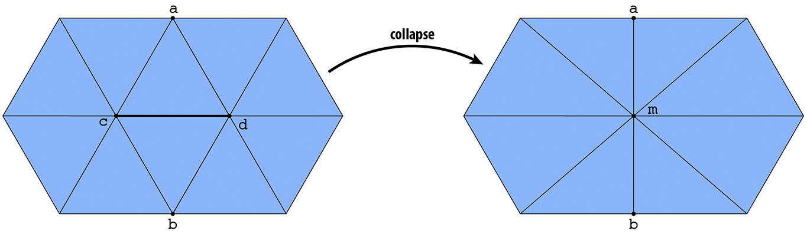

For this project, I look at two methods of approximating complicated meshes: quadric error simplification and delaunay remeshing. Quadric error simplification iteratively performs edge collapse operations that minimally alter the overall shape of the mesh. Delaunay remeshing performs mesh operations to nudge the mesh towards a delaunay triangulation of faces. After implementing both of these algorithms, I extended the MeshEdit interface from assignment 2 to support the application of these algorithms.
Original Proposal
HereTechnical Implementation
Collapse Edge
|  |
In order to implement either approximation algorithm, I first need to have a routine that collapses edges. Unlike previously implemented local operations, collapse actually involves deleting mesh elements (6 halfedges, 3 edges, 2 faces, and a face). This means that its implementation needs to be very careful about which elements are deleted and when they are deleted. If all elements are deleted at the end of the procedure, we can get around the issue of deleting elements prematurely. In my implementation, I also made a point of assigning my elements such that I never delete the input edge, opting to reassign it to a different position in the mesh and substituting another edge for the deletion. This allows me to iterate over edges and collapse them without invalidating the pointer needed to continue the iteration.
Another important issue to consider when collapsing an edge is the valence of the collapsing vertices. If one of the vertices has a valence of 3 or less, the halfedge reassignments are very different. In addition, an edge should not be collapsed if it results in a non-manifold mesh, a situation that only occurs when the edge's vertices have more than 2 shared neighboring vertices.
Quadric Error Simplification
The general algorithm for quadric error simplification is as follows
Find Quadric Matrices for All Faces
As defined in this paper, all faces in the initial mesh have a quadric matrix associated with them, which I calculate by taking the outer product of the face's coefficient vector [a, b, c, d] with itself. Nothing complicated here, a simple iteration over all the faces will suffice.
Quadric Matrices for All Vertices
Now that all faces have a quadric matrix, the quadric matrix (K) of a vertex may be defined as the sum of the quadric matrices of its adjacent faces. The quadric error of the vertex is also defined as v'Kv where v is the position of the vertex in homogenous coordinate space.
Optimal Contraction Points
When we contract an edge, we have a choice of where to place the new vertex. For my general-purpose contraction function, the new vertex is placed at the midpoint of the contracting edge, but for quadric error simplification, we can do a lot better. We define the quadric of the vertex resulting from a collapsed edge as the sum of the two previous vertices' quadrics. We can now calculate the quadric error of the edge collapse and place the resulting vertex in a position that minimizes its quadric error. I calculate the optimal points for all edges and place the edges in a priority queue sorted on the quadric error of the collapse.
The Simplification Loop
Simplification is performed by repeatedly finding and collapsing the edges with the lowest quadric error. The priority queue mentioned above allows me to do this easily by popping off the first edge in the queue, collapsing it, and updating the quadric error of the edges intersecting the new vertex. While doing this, it is important to keep track of when the collapse fails (in the case of a non-manifold mesh). In my implementation, I repeat this collapsing of edges until the mesh is reduced to half the number of faces as it started with.
Result:
|
|

|
|
|
|
|
|
|
Delaunay Remeshing
The primary goal of Delaunay remeshing is to split, collapse, and flip edges in a way that approaches a very uniform (Delaunay) triangulation of the mesh. This gets rid of skinny triangles and vertices with very high valence.
First, I find the average length of all the edges. In a perfect uniform triangulation, all of the edges have the same length, so we want to bring the edge lengths towards the average. I do this by splitting all the edges that are 4/3 the average length, and collapsing all the edges that are 4/5 the average length. In order to preserve stability in the iteration (i.e. not removing and adding edges in the same iteration), I perform this in two passes over the mesh. Then, in the next pass, I improve the valence of the mesh by flipping edges that reduce the total deviation of the mesh from valence 6. Finally, I slide all of the vertices tangentially towards the centroid of their neighbors.
|
|
|
Interesting Bugs

|
|
|